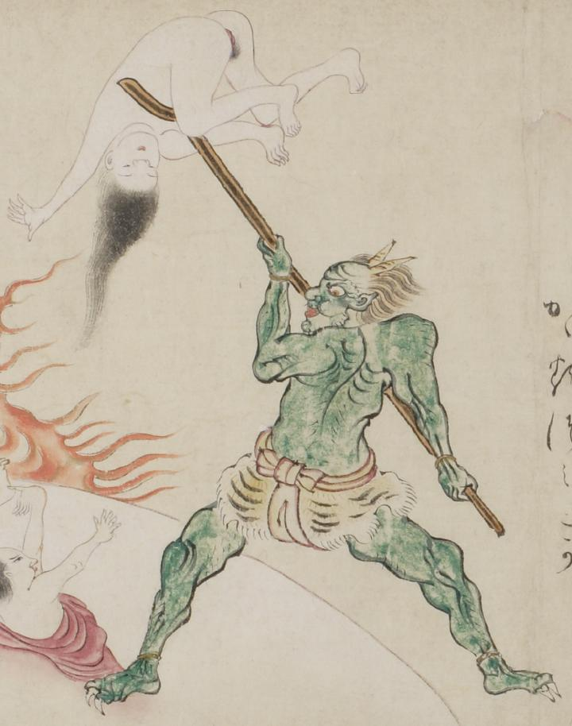

緑色の鬼。2本の角を生やし、額に皺をよせ、薄く毛の生えた筋肉質の体をしている。丸い頬をしており、太く赤い唇をしている。虎皮を腰に巻き、赤い帯で締め上げている。二股の槍を手に持ち、その先に女をかつぎ上げている。
出典：親書誌：U426_nichibunken_0058：地獄草紙絵巻；ジゴクゾウシエマキ／日付：2006／資源識別子：U426_nichibunken_0058_0004_0000
Copyright (c)2010- International Research Center for Japanese Studies, Kyoto, Japan. All rights reserved.